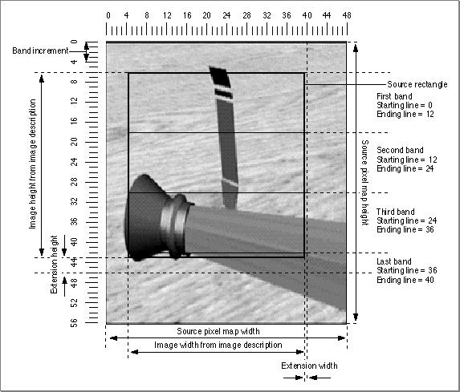

About Image Compressor Components
Image compressor components are registered by the Component Manager, and they present a standard interface to the Image Compression Manager (see "Functions" beginning on page 4-53 for a detailed description of the functions that image compressor components must provide). An image compressor component can be a systemwide resource, or it can be local to a particular application.Applications never communicate directly with these components. Applications request compression and decompression services by issuing the appropriate Image Compression Manager functions. The Image Compression Manager then performs its necessary processing before invoking the component. Of course, an application could install its own image compressor component. However, any interaction between the application and the component is still managed by the Image Compression Manager.
The Image Compression Manager knows about two types of image compressor components. Components that can compress image data carry a component type of
'imco'and are called image compressors. Components that can decompress images have a component type of'imdc'and are called image decompressors.#define compressorComponentType 'imco' /* compressor component type */ #define decompressorComponentType 'imdc' /* decompressor component type */The value of the component subtype indicates the compression algorithm supported by the component. For example, the graphics compressor has the component subtype'cvid'. (A component subtype is an element in the classification hierarchy used by
the Component Manager to define the services provided by a component.) All compressor components with the same subtype must be able to handle the same format of compressed data. During decompression, a component should handle all variations of the data specified for a subtype. While compressing an image, a compressor must not produce data that decompressors of the same subtype cannot handle during decompression.The Image Compression Manager provides a set of utility functions for compressor components. These functions allow compressors and decompressors to create custom color lookup tables, among other things. For a complete description of these utility functions, along with the functions that must be supported by compressor components, see "Image Compression Manager Utility Functions," which begins on page 4-65.
The Image Compression Manager defines four callback functions that may be provided to compressors and decompressors by applications. These callback functions are data-loading functions, data-unloading functions, completion functions, and progress functions. Data-loading functions and data-unloading functions support spooling of compressed data. Completion functions allow components to report that asynchronous operations have completed. Progress functions provide a mechanism for components to report their progress toward completing an operation. For more information about these callback functions, see the chapter "Image Compression Manager" in Inside Macintosh: QuickTime.
Banding and Extending Images
QuickTime handles images in bands, which are horizontal strips of an image. Bands allow large images to be accommodated even if the entire image cannot fit into memory. The Image Compression Manager calls the image compressor component once for each band as the image is compressed or decompressed.The Image Compression Manager determines the height of a band based on the amount of available memory and the
bandMinandbandIncparameters provided by
the compressor component in the compressor capability structure (described in "The Compressor Capability Structure" beginning on page 4-35). ThebandMinfield specifies the minimum band height supported by a decompressor component. By providing a minimum height, decompressor components that operate on blocks of pixels can operate more efficiently since the minimum height ensures that a band has at least one row of pixel blocks. ThebandIncfield specifies the increment in pixels by which the height of a band is increased above the minimum when sufficient memory is available. This specification allows easier processing by ensuring that a band is an integral number of rows of blocks. The larger these two parameters, the more memory is required for the band buffer, which may limit the size of images used with a given amount of memory. By specifying a minimum height that is the size of the image, the compressor component can indicate that it cannot handle banded images. However, the specification of a full size is not recommended unless required by the compression format, since it requires large amounts of memory for large images.For decompressing sequences of images with temporal compression, the Image Compression Manager always allocates the band to include the full image. The entire image must be available whenever the screen needs updating and the current frame does not have information for all pixels. The entire image is needed to make the comparison with the previous frame.
The depth of the band is determined by the Image Compression Manager and the
wantedPixelSizefield of the compressor capability structure (described on page 4-35). That field is filled in by the image compressor component'sCDPreCompressorCDPreDecompressfunction (described on page 4-62 and page 4-63, respectively). The Image Compression Manager requests the depth that it decides is best for the image, and the compressor component can return thewantedPixelSizefield set to that depth or another appropriate depth if the compressor cannot handle the one requested.The width of the band is usually the width of the image, but the compressor can
extend the measurement if it cannot easily handle partial blocks of pixels at the edge of the image. For compression operations, the Image Compression Manager sets the extra pixels added to the right edge of the band to the same value as the last pixel in each scan line. For decompression operations, the Image Compression Manager ignores the pixels that were added to the right edge for the extension.Image compressor components can also use extension for the height of the last (or the only) band in the image (the other bands should always be an integral multiple of the
bandIncfield set by the decompressor component). The extended pixels are added to the bottom of the band. For compression operations, the added pixels have the same value as the pixel at the same location in the last scan line of the image. For decompression operations, the added pixels are ignored. If an image compressor component does not want to deal with partial blocks of pixels, either horizontally or vertically, it can use this extension technique. However, it would be more efficient for the compressor to handle those blocks itself.Spooling of Compressed Data
If available memory is insufficient to hold the entire image that is being compressed or decompressed, the image compressor component must call data-loading or data-unloading functions to spool--that is, read or write the data from storage in stages. The calling application indicates this in the data-loading or data-unloading structure, as described in the following sections.Data Loading
Decompressor components use data loading. The data buffer still exists when the calling application supplies a data-loading function; however, the data buffer holds only part of the data and you must use the data-loading function to load the remaining data into this buffer. ThebufferSizeparameter of the decompression parameters structure (described on page 4-46) indicates the size of the data buffer.To use the data-loading function, the decompressor component calls it with the
pointer to the current position in the data buffer as a parameter. The decompressor specifies the number of bytes it needs (this number must be less than or equal to the size of the data buffer). The data-loading function fills in the data buffer with the number of bytes requested and may adjust the pointer as necessary to remove some of the used data and make room for new data.If the decompressor component needs to skip data in the compressed stream or go back to data earlier in the stream, the decompressor should call the data-loading function with a
nilpointer (instead of the pointer to the data buffer of the data-loading function) and with thesizeparameter set to the number of bytes that the decompressor wants to skip relative to the current position in the stream. A positive number seeks forward and a negative one seeks backward. To ensure that the position in the stream is known by the data-loading function, the decompressor should call the function before specifying a seek operation with an actual pointer to the current position in the data buffer and a 0 byte count. After the seek operation, the decompressor component should call the data-loading function again with the number of bytes needed from the new position to make sure the needed bytes are read into the buffer.A decompressor component should not depend on the ability to skip backward in the data stream since not all applications are able to take advantage of this feature. The decompressor should check the error from the data-loading function during a seek operation and should not use the seek feature if an error code is returned. Seeking forward works in most situations; however, it may entail reading the data and throwing it out. Hence, seeking forward may not always be faster than reading the data.
Figure 4-1 shows several image bands and their measurements.
Figure 4-1 Image bands and their measurements

Data Unloading
Data-unloading functions are used by compressor components when there is insufficient memory to hold the buffer for the compressed data produced by the compressor component. The compressor component needs to use a data-unloading function if theflushProcRecordfield in the compression parameters structure is notnil. (For details on the compression parameters structure, see page 4-40). A data buffer is provided even if the data-unloading function is present, and it should be used to hold the data to be unloaded by the data-unloading function. The size of the data buffer is indicated by thebufferSizefield in the parameters.To use the data-unloading function, the compressor fills the data buffer with as much data as possible (within the size limitations of the data buffer). The compressor component then calls the data-unloading function with a pointer to the start of the data buffer and the number of bytes written. The data-unloading function then unloads the data from the buffer. The compressor should then use the entire buffer for the next piece of data--and continue in this manner until all the data is unloaded.
If the compressor component needs to skip forward or backward in the data stream,
it should call the data-unloading function with anildata pointer, and the compressor should specify the number of bytes to seek relative to the current position in thesizeparameter. A positive number seeks forward and a negative one seeks backward. The compressor component should make sure that all data is unloaded from the buffer before commencing the seek operation. After the seek operation, the next data unloaded from the buffer with the data-unloading function is written starting at the new location. The new data overwrites any data previously written at that location in the data stream.Not all applications support the ability to seek forward or backward with a
data-unloading function. The compressor component should check the error result when performing such an operation.Compressing or Decompressing Images Asynchronously
With the appropriate hardware, image compressor components can handle asynchronous compression and decompression of images using theCDBandCompressandCDBandDecompressfunctions, which are described on page 4-63 and page 4-64, respectively. Asynchronous refers to the fact that the compression or decompression hardware performs its operations while the Macintosh computer simultaneously continues its activities. For example, the Macintosh can read a movie for the next frame while the current frame is decompressed. The Image Compression Manager ensures that any asynchronous operation in progress is completed before starting the next operation.If the Image Compression Manager wants the image compressor component to perform an operation asynchronously, then the
completionProcRecordfield in the compression or decompression parameters structure that the Image Compressor Manager sends to the image compressor component should be set to a nonzero value. If the value is -1, then the component should perform the operation asynchronously, but it does not need to call a completion function. If the value is notniland not -1, then the component should perform the operation asynchronously, and it should call the completion function when the operation is done. For details on the compression parameters structure, see page 4-40. For more on the decompression parameters structure, see page 4-46.To provide synchronization for the Image Compression Manager, an image compressor component provides the
CDCodecBusyfunction (described on page 4-61).CDCodecBusyshould always return 1 if an asynchronous operation is in progress; it should return 0 if there is no asynchronous operation in progress or if the image compressor component does not perform asynchronous operations. If the
Image Compression Manager provided a completion function, the image compressor component must call the completion function as well.There are two distinct steps to an asynchronous compression or decompression operation. The first step depends on the source data, and the second step depends on the destination data.
- IMPORTANT
- If the Image Compression Manager provided a completion function, then the compressor component must call it; otherwise, the memory for that operation may become increasingly stranded in the system and difficult to deallocate.
Depending on the design of the hardware used by your image compressor component, the two steps in the asynchronous operations may be independent of each other or tied together. To indicate to the completion function which steps have been completed, you use the
- For a compression operation, the first step indicates when the compressor is finished with the pixels of the source image, and the second step specifies that the compressed data is fully written to memory.
- For a decompression operation, the first step is complete when the compressed data is read into the hardware or the decompressor's local buffers, and the second step is complete when all the pixels of the image have been written to the destination.
codecCompletionSourceandCodecCompletionDestflags for the first and second steps, respectively. If both parts of the asynchronous operation are completed together, the image compressor component can call the completion function once with both flags set. The memory used for each part of the operation remains valid and locked while asynchronous operations are in progress. It is the responsibility of image compressor components to make sure that they remain resident in RAM if virtual memory is active (this is only an issue for hardware image compressor components that perform direct memory access).Progress Functions
Progress functions provide the calling application an indication of how much of an operation is complete and a way for the user to cancel an operation. If theprogressProcRecordfield is set either in the compression parameters structure or the decompression parameters structure, then the image compressor component should call the progress function as it performs the operation. The progress function is typically called once for each scan line or row of pixel blocks processed, and it returns a completion value that is the percentage of the band that is complete, represented as a fixed-point number from 0 to 1.0.If the result returned from a progress function is not 0, then the image compressor component should return as soon as possible (without completing the band that is being processed) with a return value of
codecAbortErr.
- Note
- For efficiency, many image compressor components have a streamlined path used for cases that do not require data-loading, data-unloading, or progress functions, and a slower path that supports any or all these application-defined functions when required.
Subtopics
- Banding and Extending Images
- Spooling of Compressed Data
- Data Loading
- Data Unloading
- Compressing or Decompressing Images Asynchronously
- Progress Functions